导数的概念与积分一样，有直接的直观来源，也不难掌握。然而，它为我们打开了一扇门，门后是极其丰富的数学事实与见解。本书要发展的方法具有怎样的威力，有多少重要而不同的应用，读者只有逐渐才能体会。
最初提示导数概念的，是光滑曲线 y = f ( x ) y=f(x) y = f ( x ) x , y x,y x , y P P P x x x α \alpha α f ( x ) f(x) f ( x ) P P P x , y x,y x , y α \alpha α P P P α \alpha α f ( x ) f(x) f ( x ) P P P y = f ( x ) y=f(x) y = f ( x )
早在十六世纪，几何、力学和光学中的最优化问题，也就是求最大值与最小值的问题，便使数学家们深感求切线方向，即“求导”的重要（见第 3.6 节）。另一个同样重要、同样引向求导的问题，是给任意非匀速运动中的速度这一直观概念赋予精确的数学意义（见第 162 页）。我们先从怎样通过极限过程对曲线的切线作分析描述入手。
a. 导数与切线
几何定义。 依照朴素的直观，我们用如下几何极限过程定义给定曲线 y = f ( x ) y=f(x) y = f ( x ) P P P P P P P 1 P_1 P 1 P , P 1 P,P_1 P , P 1 P 1 P_1 P 1 P P P P 1 P_1 P 1 P P P 切线 。说割线有这样的极限位置，等价于假设曲线在 P P P P P P y = ∣ x ∣ y=|x| y = ∣ x ∣ ( 0 , 0 ) (0,0) ( 0 , 0 )
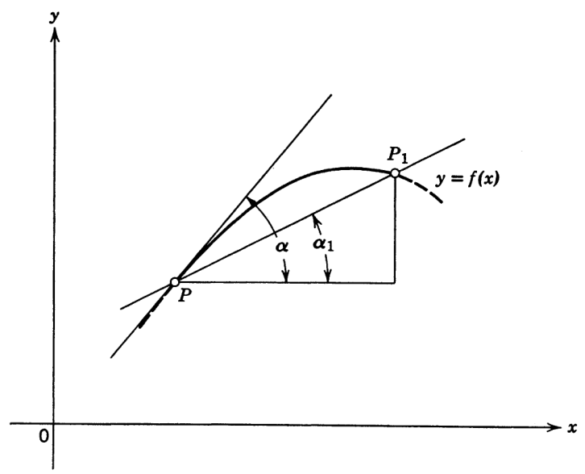
图 2.21 割线与切线 既然曲线由函数 y = f ( x ) y=f(x) y = f ( x ) f ( x ) f(x) f ( x ) f ( x ) f(x) f ( x ) 求导 。
一条直线与 x x x x x x 0 ≤ α < π 0\le\alpha<\pi 0 ≤ α < π α 1 \alpha_1 α 1 P P 1 PP_1 P P 1 x x x α \alpha α x x x lim P 1 → P α 1 = α \lim_{P_1\to P}\alpha_1=\alpha lim P 1 → P α 1 = α P , P 1 P,P_1 P , P 1 x , y x,y x , y x 1 , y 1 x_1,y_1 x 1 , y 1
tan α 1 = y 1 − y x 1 − x = f ( x 1 ) − f ( x ) x 1 − x .
\tan\alpha_1=\frac{y_1-y}{x_1-x}=\frac{f(x_1)-f(x)}{x_1-x}.
tan α 1 = x 1 − x y 1 − y = x 1 − x f ( x 1 ) − f ( x ) . 因此，暂不考虑 α = π / 2 \alpha=\pi/2 α = π /2
lim x 1 → x f ( x 1 ) − f ( x ) x 1 − x = lim x 1 → x tan α 1 = tan α .
\lim_{x_1\to x}\frac{f(x_1)-f(x)}{x_1-x}=\lim_{x_1\to x}\tan\alpha_1=\tan\alpha.
x 1 → x lim x 1 − x f ( x 1 ) − f ( x ) = x 1 → x lim tan α 1 = tan α . 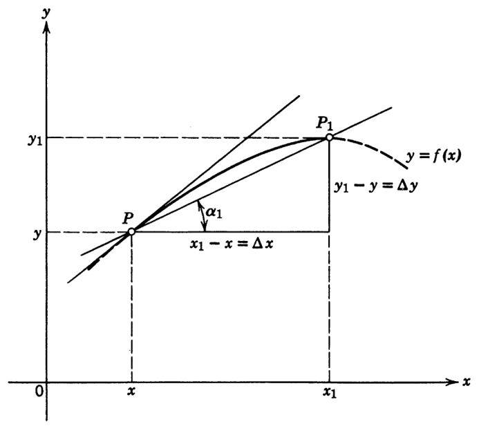
图 2.22 原注 1（第 157 页） 即旋转 π / 2 \pi/2 π /2 y y y
原注 1（第 158 页） 这个等式要有意义，须假设 x x x x 1 x_1 x 1 f f f
记号。 表达式
f ( x 1 ) − f ( x ) x 1 − x = y 1 − y x 1 − x = Δ y Δ x
\frac{f(x_1)-f(x)}{x_1-x}=\frac{y_1-y}{x_1-x}=\frac{\Delta y}{\Delta x}
x 1 − x f ( x 1 ) − f ( x ) = x 1 − x y 1 − y = Δ x Δ y 称为函数 y = f ( x ) y=f(x) y = f ( x ) 差商 ，其中 Δ y \Delta y Δ y Δ x \Delta x Δ x y = f ( x ) y=f(x) y = f ( x ) x x x Δ \Delta Δ α \alpha α x 1 x_1 x 1 x x x
我们称这个差商的极限为函数 y = f ( x ) y=f(x) y = f ( x ) x x x 导数 。³ 通常用拉格朗日的记号 y ′ = f ′ ( x ) y'=f'(x) y ′ = f ′ ( x ) d y / d x dy/dx d y / d x d f ( x ) / d x df(x)/dx df ( x ) / d x ( d / d x ) f ( x ) (d/dx)f(x) ( d / d x ) f ( x ) f ′ ( x ) f'(x) f ′ ( x ) x x x x x x f ′ ( x ) f'(x) f ′ ( x ) 导函数 ，其图像称为导曲线 。导数的定义有以下几种写法：
f ′ ( x ) = lim x 1 → x f ( x 1 ) − f ( x ) x 1 − x = lim h → 0 f ( x + h ) − f ( x ) h .
f'(x)=\lim_{x_1\to x}\frac{f(x_1)-f(x)}{x_1-x}
=\lim_{h\to0}\frac{f(x+h)-f(x)}h.
f ′ ( x ) = x 1 → x lim x 1 − x f ( x 1 ) − f ( x ) = h → 0 lim h f ( x + h ) − f ( x ) . 第二式把 x 1 x_1 x 1 x + h x+h x + h
d y d x = d f ( x ) d x = f ′ ( x ) = lim x 1 → x f ( x 1 ) − f ( x ) x 1 − x = lim Δ x → 0 Δ y Δ x .
\frac{dy}{dx}=\frac{df(x)}{dx}=f'(x)
=\lim_{x_1\to x}\frac{f(x_1)-f(x)}{x_1-x}=\lim_{\Delta x\to0}\frac{\Delta y}{\Delta x}.
d x d y = d x df ( x ) = f ′ ( x ) = x 1 → x lim x 1 − x f ( x 1 ) − f ( x ) = Δ x → 0 lim Δ x Δ y . 原注 2–4（第 158 页） 斜率有时也叫作梯度（gradient）或方向系数。旧教科书有时也把导数称为微分系数。另有柯西的记号 D f ( x ) Df(x) D f ( x ) y ˙ \dot y y ˙
若 f f f x x x ∣ h ∣ |h| ∣ h ∣ x + h x+h x + h h h h [ f ( x + h ) − f ( x ) ] / h [f(x+h)-f(x)]/h [ f ( x + h ) − f ( x )] / h h h h f ′ ( x ) f'(x) f ′ ( x ) h h h
∣ f ( x + h ) − f ( x ) h − f ′ ( x ) ∣
\left|\frac{f(x+h)-f(x)}h-f'(x)\right|
h f ( x + h ) − f ( x ) − f ′ ( x ) 都能任意小。
用分析方法计算导数。 导数的直观概念和一般分析概念都简单明了。但怎样实际完成这样的极限过程，就不那么显而易见了。
不可把 x 1 = x x_1=x x 1 = x 0 / 0 0/0 0/0
例如，对 f ( x ) = x 2 f(x)=x^2 f ( x ) = x 2
f ( x 1 ) − f ( x ) x 1 − x = x 1 2 − x 2 x 1 − x = x 1 + x .
\frac{f(x_1)-f(x)}{x_1-x}=\frac{x_1^2-x^2}{x_1-x}=x_1+x.
x 1 − x f ( x 1 ) − f ( x ) = x 1 − x x 1 2 − x 2 = x 1 + x . 函数 x 1 + x x_1+x x 1 + x ( x 1 2 − x 2 ) / ( x 1 − x ) (x_1^2-x^2)/(x_1-x) ( x 1 2 − x 2 ) / ( x 1 − x ) x 1 = x x_1=x x 1 = x x 1 x_1 x 1 x 1 ≠ x x_1\ne x x 1 = x lim x 1 → x ( x 1 2 − x 2 ) / ( x 1 − x ) \lim_{x_1\to x}(x_1^2-x^2)/(x_1-x) lim x 1 → x ( x 1 2 − x 2 ) / ( x 1 − x ) lim x 1 → x ( x 1 + x ) \lim_{x_1\to x}(x_1+x) lim x 1 → x ( x 1 + x ) x 1 + x x_1+x x 1 + x x 1 = x x_1=x x 1 = x x 1 = x x_1=x x 1 = x
f ′ ( x ) = d ( x 2 ) d x = 2 x .
f'(x)=\frac{d(x^2)}{dx}=2x.
f ′ ( x ) = d x d ( x 2 ) = 2 x . 再举一例，对 x > 0 x>0 x > 0 y = x y=\sqrt{x} y = x x 1 ≠ x x_1\ne x x 1 = x
f ( x 1 ) − f ( x ) x 1 − x = x 1 − x x 1 − x = ( x 1 − x ) ( x 1 + x ) ( x 1 − x ) ( x 1 + x ) = x 1 − x ( x 1 − x ) ( x 1 + x ) = 1 x 1 + x .
\begin{aligned}
\frac{f(x_1)-f(x)}{x_1-x}&=\frac{\sqrt{x_1}-\sqrt{x}}{x_1-x}
=\frac{(\sqrt{x_1}-\sqrt{x})(\sqrt{x_1}+\sqrt{x})}{(x_1-x)(\sqrt{x_1}+\sqrt{x})}\\
&=\frac{x_1-x}{(x_1-x)(\sqrt{x_1}+\sqrt{x})}=\frac1{\sqrt{x_1}+\sqrt{x}}.
\end{aligned}
x 1 − x f ( x 1 ) − f ( x ) = x 1 − x x 1 − x = ( x 1 − x ) ( x 1 + x ) ( x 1 − x ) ( x 1 + x ) = ( x 1 − x ) ( x 1 + x ) x 1 − x = x 1 + x 1 . 所以对 x > 0 x>0 x > 0
d x d x = lim x 1 → x 1 x 1 + x = 1 2 x .
\frac{d\sqrt{x}}{dx}=\lim_{x_1\to x}\frac1{\sqrt{x_1}+\sqrt{x}}=\frac1{2\sqrt{x}}.
d x d x = x 1 → x lim x 1 + x 1 = 2 x 1 . x = 0 x=0 x = 0 x 1 → 0 x_1\to0 x 1 → 0 ( x 1 − 0 ) / ( x 1 − 0 ) = 1 / x 1 → ∞ (\sqrt{x_1}-0)/(x_1-0)=1/\sqrt{x_1}\to\infty ( x 1 − 0 ) / ( x 1 − 0 ) = 1/ x 1 → ∞
分析定义
求导过程即使完全脱离切线的几何直观，也有确定的分析意义，这一点极其重要。此前我们把积分的分析定义从面积的几何图像中独立出来，才得以把面积的概念建立在积分概念之上。现在本着同一精神，撇开函数 y = f ( x ) y=f(x) y = f ( x ) y ′ = f ′ ( x ) y'=f'(x) y ′ = f ′ ( x ) Δ y / Δ x \Delta y/\Delta x Δ y /Δ x
差量 Δ y = y 1 − y = f ( x 1 ) − f ( x ) \Delta y=y_1-y=f(x_1)-f(x) Δ y = y 1 − y = f ( x 1 ) − f ( x ) Δ x = x 1 − x \Delta x=x_1-x Δ x = x 1 − x y , x y,x y , x Δ y / Δ x \Delta y/\Delta x Δ y /Δ x ( x , x + Δ x ) (x,x+\Delta x) ( x , x + Δ x ) y y y x x x f ′ ( x ) = d y / d x f'(x)=dy/dx f ′ ( x ) = d y / d x y y y x x x
若此极限存在，就说 f ( x ) f(x) f ( x ) 可微 。除非特别说明，我们总假定所讨论的函数可微。¹ 尤须注意，f ( x ) f(x) f ( x ) x x x [ f ( x + h ) − f ( x ) ] / h [f(x+h)-f(x)]/h [ f ( x + h ) − f ( x )] / h h → 0 h\to0 h → 0 h h h x + h x+h x + h f f f f f f x x x h h h h h h
原注 1（第 160 页） 后面将举出不满足这种假设的例子（见第 167 页）。正因有这样的例子，在有必要的场合才须明确提出可微性的假设。
有了 f ′ ( x ) f'(x) f ′ ( x ) tan α = f ′ ( x ) \tan\alpha=f'(x) tan α = f ′ ( x ) x x x α \alpha α ( x , y ) (x,y) ( x , y ) y = f ( x ) y=f(x) y = f ( x ) ( x , y ) (x,y) ( x , y ) ( x , y ) (x,y) ( x , y )
原注 1（第 161 页） 除非像前面那样规定 0 ≤ α < π 0\le\alpha<\pi 0 ≤ α < π α \alpha α α ± π , α ± 2 π \alpha\pm\pi,\ \alpha\pm2\pi α ± π , α ± 2 π
单调函数
尽管如此，把导数直观地解释为曲线切线的斜率，即使在纯分析的讨论中也大有助于理解。例如，下面的命题就来自几何直观：
当 f ′ ( x ) > 0 f'(x)>0 f ′ ( x ) > 0 f ( x ) f(x) f ( x ) f ′ ( x ) < 0 f'(x)<0 f ′ ( x ) < 0 f ( x ) f(x) f ( x )
事实上，若 f ′ ( x ) f'(x) f ′ ( x ) x x x y y y α \alpha α x x x f ′ ( x ) f'(x) f ′ ( x ) α \alpha α x x x
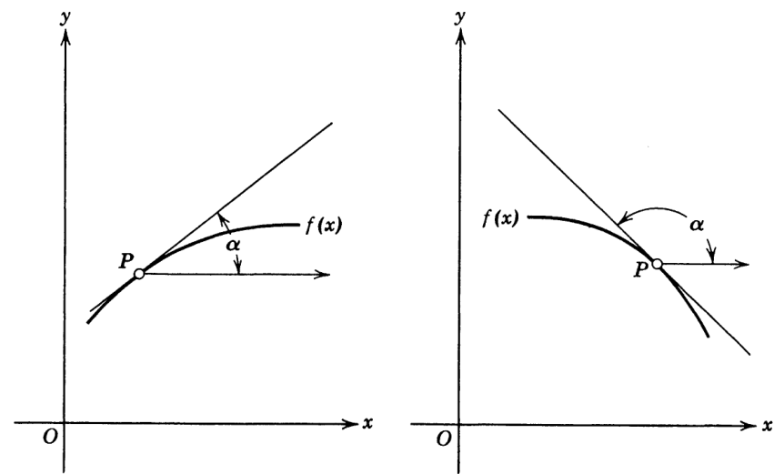
图 2.23 递增、递减函数图像的切线 b. 作为速度的导数
为了用精确定义代替速度或速率的直观概念，我们又一次完全自然地遇到了已经称为求导的那个极限过程。
设一个点沿直线运动，取该直线为有向 y y y y y y y y y y y y t t t y = f ( t ) y=f(t) y = f ( t ) f ( t ) = c t + b f(t)=ct+b f ( t ) = c t + b c c c t , t 1 t,t_1 t , t 1
c = f ( t 1 ) − f ( t ) t 1 − t .
c=\frac{f(t_1)-f(t)}{t_1-t}.
c = t 1 − t f ( t 1 ) − f ( t ) . 所以速度是函数 c t + b ct+b c t + b t t t [ f ( t 1 ) − f ( t ) ] / ( t 1 − t ) [f(t_1)-f(t)]/(t_1-t) [ f ( t 1 ) − f ( t )] / ( t 1 − t ) t 1 t_1 t 1 t t t 平均速度 。若令 t 1 t_1 t 1 t t t t t t t t t
f ′ ( t ) = lim t 1 → t f ( t 1 ) − f ( t ) t 1 − t .
f'(t)=\lim_{t_1\to t}\frac{f(t_1)-f(t)}{t_1-t}.
f ′ ( t ) = t 1 → t lim t 1 − t f ( t 1 ) − f ( t ) . 牛顿强调导数作为速度的解释，¹ 用 y ˙ \dot y y ˙ f ˙ ( x ) \dot f(x) f ˙ ( x ) f ′ ( t ) f'(t) f ′ ( t )
原注 1（第 162 页） 牛顿把导数称为“流数”（fluxions）。
一个简单的例子是自由落体运动。我们从实验所确定的定律出发：从 t = 0 t=0 t = 0 t t t t 2 t^2 t 2 y = f ( t ) = a t 2 y=f(t)=at^2 y = f ( t ) = a t 2 a a a f ′ ( t ) = 2 a t f'(t)=2at f ′ ( t ) = 2 a t
c. 求导的例子
下面用几个典型例子说明求导的方法。
线性函数
对常函数 y = f ( x ) = c y=f(x)=c y = f ( x ) = c x x x f ( x + h ) − f ( x ) = c − c = 0 f(x+h)-f(x)=c-c=0 f ( x + h ) − f ( x ) = c − c = 0 lim h → 0 [ f ( x + h ) − f ( x ) ] / h = 0 \lim_{h\to0}[f(x+h)-f(x)]/h=0 lim h → 0 [ f ( x + h ) − f ( x )] / h = 0
对线性函数 y = f ( x ) = c x + b y=f(x)=cx+b y = f ( x ) = c x + b
f ′ ( x ) = lim h → 0 f ( x + h ) − f ( x ) h = lim h → 0 c h h = c .
f'(x)=\lim_{h\to0}\frac{f(x+h)-f(x)}h=\lim_{h\to0}\frac{ch}h=c.
f ′ ( x ) = h → 0 lim h f ( x + h ) − f ( x ) = h → 0 lim h c h = c . 线性函数的导数为常数。
x x x 下面对幂函数 y = f ( x ) = x α y=f(x)=x^\alpha y = f ( x ) = x α α \alpha α x 1 ≠ x x_1\ne x x 1 = x
f ( x 1 ) − f ( x ) x 1 − x = x 1 α − x α x 1 − x = x 1 α − 1 + x 1 α − 2 x + ⋯ + x α − 1 .
\frac{f(x_1)-f(x)}{x_1-x}=\frac{x_1^\alpha-x^\alpha}{x_1-x}
=x_1^{\alpha-1}+x_1^{\alpha-2}x+\cdots+x^{\alpha-1}.
x 1 − x f ( x 1 ) − f ( x ) = x 1 − x x 1 α − x α = x 1 α − 1 + x 1 α − 2 x + ⋯ + x α − 1 . 这个简单的代数变换是取极限的关键。右边最后的式子是 x 1 x_1 x 1 x 1 = x x_1=x x 1 = x x 1 → x x_1\to x x 1 → x x x x x 1 x_1 x 1 x α − 1 x^{\alpha-1} x α − 1 α \alpha α
y ′ = f ′ ( x ) = d ( x α ) d x = α x α − 1 .
y'=f'(x)=\frac{d(x^\alpha)}{dx}=\alpha x^{\alpha-1}.
y ′ = f ′ ( x ) = d x d ( x α ) = α x α − 1 . 若 α \alpha α − β -\beta − β x ≠ 0 x\ne0 x = 0
f ( x 1 ) − f ( x ) x 1 − x = 1 / x 1 β − 1 / x β x 1 − x = − x β − x 1 β x − x 1 ⋅ 1 x β x 1 β = − x β − 1 + x β − 2 x 1 + ⋯ + x 1 β − 1 x 1 β x β .
\begin{aligned}
\frac{f(x_1)-f(x)}{x_1-x}
&=\frac{1/x_1^\beta-1/x^\beta}{x_1-x}
=-\frac{x^\beta-x_1^\beta}{x-x_1}\cdot\frac1{x^\beta x_1^\beta}\\
&=-\frac{x^{\beta-1}+x^{\beta-2}x_1+\cdots+x_1^{\beta-1}}{x_1^\beta x^\beta}.
\end{aligned}
x 1 − x f ( x 1 ) − f ( x ) = x 1 − x 1/ x 1 β − 1/ x β = − x − x 1 x β − x 1 β ⋅ x β x 1 β 1 = − x 1 β x β x β − 1 + x β − 2 x 1 + ⋯ + x 1 β − 1 . 仍然只需把 x 1 x_1 x 1 x x x y ′ = − β x β − 1 / x 2 β = − β x − β − 1 y'=-\beta x^{\beta-1}/x^{2\beta}=-\beta x^{-\beta-1} y ′ = − β x β − 1 / x 2 β = − β x − β − 1 α = − β \alpha=-\beta α = − β y ′ = α x α − 1 y'=\alpha x^{\alpha-1} y ′ = α x α − 1
最后来证明当 x x x α \alpha α α = p / q \alpha=p/q α = p / q p , q p,q p , q α = 0 \alpha=0 α = 0 x α x^\alpha x α
f ( x 1 ) − f ( x ) x 1 − x = x 1 p / q − x p / q x 1 − x .
\frac{f(x_1)-f(x)}{x_1-x}=\frac{x_1^{p/q}-x^{p/q}}{x_1-x}.
x 1 − x f ( x 1 ) − f ( x ) = x 1 − x x 1 p / q − x p / q . 置 x 1 / q = ξ , x 1 1 / q = ξ 1 x^{1/q}=\xi,\ x_1^{1/q}=\xi_1 x 1/ q = ξ , x 1 1/ q = ξ 1
f ( x 1 ) − f ( x ) x 1 − x = ξ 1 p − ξ p ξ 1 q − ξ q = ξ 1 p − 1 + ξ 1 p − 2 ξ + ⋯ + ξ p − 1 ξ 1 q − 1 + ξ 1 q − 2 ξ + ⋯ + ξ q − 1 .
\frac{f(x_1)-f(x)}{x_1-x}
=\frac{\xi_1^p-\xi^p}{\xi_1^q-\xi^q}
=\frac{\xi_1^{p-1}+\xi_1^{p-2}\xi+\cdots+\xi^{p-1}}{\xi_1^{q-1}+\xi_1^{q-2}\xi+\cdots+\xi^{q-1}}.
x 1 − x f ( x 1 ) − f ( x ) = ξ 1 q − ξ q ξ 1 p − ξ p = ξ 1 q − 1 + ξ 1 q − 2 ξ + ⋯ + ξ q − 1 ξ 1 p − 1 + ξ 1 p − 2 ξ + ⋯ + ξ p − 1 . 这一变换之后便可直接令 x 1 → x x_1\to x x 1 → x ξ 1 → ξ \xi_1\to\xi ξ 1 → ξ
p q ξ p − 1 ξ q − 1 = p q ξ p − q = p q x ( p − q ) / q = p q x ( p / q ) − 1 .
\frac pq\frac{\xi^{p-1}}{\xi^{q-1}}
=\frac pq\xi^{p-q}=\frac pq x^{(p-q)/q}=\frac pq x^{(p/q)-1}.
q p ξ q − 1 ξ p − 1 = q p ξ p − q = q p x ( p − q ) / q = q p x ( p / q ) − 1 . 结果仍是 f ′ ( x ) = y ′ = α x α − 1 f'(x)=y'=\alpha x^{\alpha-1} f ′ ( x ) = y ′ = α x α − 1 α \alpha α
三角函数
最后一个例子是对三角函数 sin x \sin x sin x cos x \cos x cos x
sin ( x + h ) − sin x h = sin x cos h + cos x sin h − sin x h = sin x cos h − 1 h + cos x sin h h .
\frac{\sin(x+h)-\sin x}{h}
=\frac{\sin x\cos h+\cos x\sin h-\sin x}{h}
=\sin x\,\frac{\cos h-1}{h}+\cos x\,\frac{\sin h}{h}.
h sin ( x + h ) − sin x = h sin x cos h + cos x sin h − sin x = sin x h cos h − 1 + cos x h sin h . 根据第 1.8 节（第 84–85 页）的关系式
lim h → 0 sin h h = 1 , lim h → 0 cos h − 1 h = 0 ,
\lim_{h\to0}\frac{\sin h}h=1,\qquad \lim_{h\to0}\frac{\cos h-1}h=0,
h → 0 lim h sin h = 1 , h → 0 lim h cos h − 1 = 0 , 立即得到 y ′ = d ( sin x ) / d x = cos x y'=d(\sin x)/dx=\cos x y ′ = d ( sin x ) / d x = cos x y = cos x y=\cos x y = cos x
cos ( x + h ) − cos x h = cos x cos h − 1 h − sin x sin h h
\frac{\cos(x+h)-\cos x}h=\cos x\,\frac{\cos h-1}h-\sin x\,\frac{\sin h}h
h cos ( x + h ) − cos x = cos x h cos h − 1 − sin x h sin h 出发，令 h → 0 h\to0 h → 0 y ′ = d ( cos x ) / d x = − sin x y'=d(\cos x)/dx=-\sin x y ′ = d ( cos x ) / d x = − sin x
原注 1（第 165 页） 把 x x x sin x \sin x sin x cos x \cos x cos x x x x
d. 若干基本求导法则
同积分一样，求导也有若干由定义立即推出的基本法则。凭这些法则，就足以求出许多函数的导数。
若 ϕ ( x ) = f ( x ) + g ( x ) \phi(x)=f(x)+g(x) ϕ ( x ) = f ( x ) + g ( x ) ϕ ′ ( x ) = f ′ ( x ) + g ′ ( x ) \phi'(x)=f'(x)+g'(x) ϕ ′ ( x ) = f ′ ( x ) + g ′ ( x )
若 ψ ( x ) = c f ( x ) \psi(x)=cf(x) ψ ( x ) = c f ( x ) c c c ψ ′ ( x ) = c f ′ ( x ) \psi'(x)=cf'(x) ψ ′ ( x ) = c f ′ ( x )
事实上，
ϕ ( x + h ) − ϕ ( x ) h = f ( x + h ) − f ( x ) h + g ( x + h ) − g ( x ) h , ψ ( x + h ) − ψ ( x ) h = c f ( x + h ) − f ( x ) h .
\frac{\phi(x+h)-\phi(x)}h
=\frac{f(x+h)-f(x)}h+\frac{g(x+h)-g(x)}h,\qquad
\frac{\psi(x+h)-\psi(x)}h=c\frac{f(x+h)-f(x)}h.
h ϕ ( x + h ) − ϕ ( x ) = h f ( x + h ) − f ( x ) + h g ( x + h ) − g ( x ) , h ψ ( x + h ) − ψ ( x ) = c h f ( x + h ) − f ( x ) . 取极限，立即得到所说的结果。因此，例如，函数 ϕ ( x ) = f ( x ) + a x + b \phi(x)=f(x)+ax+b ϕ ( x ) = f ( x ) + a x + b a , b a,b a , b ϕ ′ ( x ) = f ′ ( x ) + a \phi'(x)=f'(x)+a ϕ ′ ( x ) = f ′ ( x ) + a y = a 0 x n + a 1 x n − 1 + ⋯ + a n y=a_0x^n+a_1x^{n-1}+\cdots+a_n y = a 0 x n + a 1 x n − 1 + ⋯ + a n
y ′ = n a 0 x n − 1 + ( n − 1 ) a 1 x n − 2 + ⋯ + 2 a n − 2 x + a n − 1 .
y'=na_0x^{n-1}+(n-1)a_1x^{n-2}+\cdots+2a_{n-2}x+a_{n-1}.
y ′ = n a 0 x n − 1 + ( n − 1 ) a 1 x n − 2 + ⋯ + 2 a n − 2 x + a n − 1 . e. 函数的可微性与连续性
可微性比连续性是更强的条件：函数只要可微，就一定连续。 因为若 h h h [ f ( x + h ) − f ( x ) ] / h [f(x+h)-f(x)]/h [ f ( x + h ) − f ( x )] / h f ( x + h ) − f ( x ) f(x+h)-f(x) f ( x + h ) − f ( x ) h h h f ( x ) f(x) f ( x ) x x x
原注 1（第 166 页） 这是因为
lim h → 0 [ f ( x + h ) − f ( x ) ] = [ lim h → 0 f ( x + h ) − f ( x ) h ] ( lim h → 0 h ) = f ′ ( x ) ⋅ 0 = 0.
\lim_{h\to0}[f(x+h)-f(x)]
=\left[\lim_{h\to0}\frac{f(x+h)-f(x)}h\right]\left(\lim_{h\to0}h\right)=f'(x)\cdot0=0.
h → 0 lim [ f ( x + h ) − f ( x )] = [ h → 0 lim h f ( x + h ) − f ( x ) ] ( h → 0 lim h ) = f ′ ( x ) ⋅ 0 = 0. 导数的间断与折角
逆命题却不成立，连续函数未必在每一点都有导数。最简单的反例是 f ( x ) = ∣ x ∣ f(x)=|x| f ( x ) = ∣ x ∣ x ≤ 0 x\le0 x ≤ 0 f ( x ) = − x f(x)=-x f ( x ) = − x x ≥ 0 x\ge0 x ≥ 0 f ( x ) = x f(x)=x f ( x ) = x x = 0 x=0 x = 0 h h h [ f ( x + h ) − f ( x ) ] / h [f(x+h)-f(x)]/h [ f ( x + h ) − f ( x )] / h 1 1 1 − 1 -1 − 1 h h h x = 0 x=0 x = 0 右导数 与左导数 ，即差商在 h h h
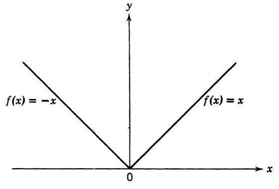
图 2.24 无穷间断
连续函数不可微的点还有另一种例子，即导数变成无穷大的点。在这些点，差商 [ f ( x + h ) − f ( x ) ] / h [f(x+h)-f(x)]/h [ f ( x + h ) − f ( x )] / h h → 0 h\to0 h → 0 y = f ( x ) = x 3 = x 1 / 3 y=f(x)=\sqrt[3]{x}=x^{1/3} y = f ( x ) = 3 x = x 1/3 x x x x ≠ 0 x\ne0 x = 0 y ′ = 1 3 x − 2 / 3 y'=\tfrac13 x^{-2/3} y ′ = 3 1 x − 2/3 x = 0 x=0 x = 0 [ f ( x + h ) − f ( x ) ] / h = h 1 / 3 / h = h − 2 / 3 [f(x+h)-f(x)]/h=h^{1/3}/h=h^{-2/3} [ f ( x + h ) − f ( x )] / h = h 1/3 / h = h − 2/3 h → 0 h\to0 h → 0 h h h
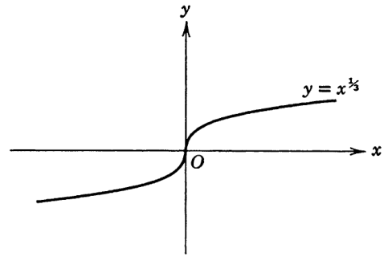
图 2.25 函数 y = f ( x ) = x y=f(x)=\sqrt{x} y = f ( x ) = x x ≥ 0 x\ge0 x ≥ 0 x = 0 x=0 x = 0 x x x y y y [ f ( h ) − f ( 0 ) ] / h = 1 / h [f(h)-f(0)]/h=1/\sqrt h [ f ( h ) − f ( 0 )] / h = 1/ h y y y
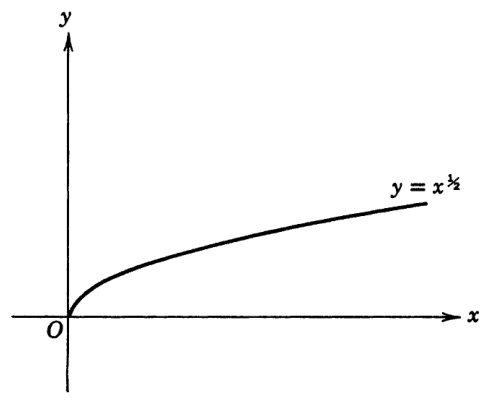
图 2.26 最后，函数 y = x 2 3 = x 2 / 3 y=\sqrt[3]{x^2}=x^{2/3} y = 3 x 2 = x 2/3 x = 0 x=0 x = 0 [ f ( h ) − f ( 0 ) ] / h = 1 / h 3 [f(h)-f(0)]/h=1/\sqrt[3]{h} [ f ( h ) − f ( 0 )] / h = 1/ 3 h y = x 2 / 3 y=x^{2/3} y = x 2/3 x x x
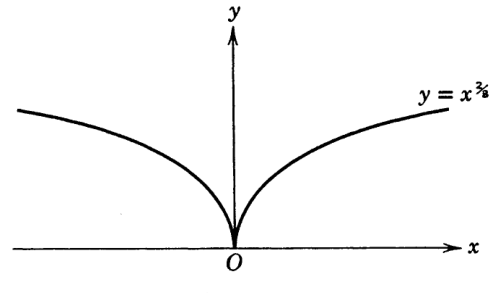
图 2.27 f. 高阶导数及其意义
函数导数 f ′ ( x ) f'(x) f ′ ( x ) f ( x ) f(x) f ( x ) 导曲线 。例如，抛物线 y = x 2 y=x^2 y = x 2 y = 2 x y=2x y = 2 x y = sin x y=\sin x y = sin x y = cos x y=\cos x y = cos x y = cos x y=\cos x y = cos x y = − sin x y=-\sin x y = − sin x x x x
很自然可以再作导曲线的导曲线，也就是求函数 f ′ ( x ) = ϕ ( x ) f'(x)=\phi(x) f ′ ( x ) = ϕ ( x )
ϕ ′ ( x ) = lim h → 0 f ′ ( x + h ) − f ′ ( x ) h
\phi'(x)=\lim_{h\to0}\frac{f'(x+h)-f'(x)}h
ϕ ′ ( x ) = h → 0 lim h f ′ ( x + h ) − f ′ ( x ) 存在，就称它为函数 f ( x ) f(x) f ( x ) 二阶导数 ，记为 f ′ ′ ( x ) f''(x) f ′′ ( x ) f ′ ′ ( x ) f''(x) f ′′ ( x ) f ( x ) f(x) f ( x ) f ′ ′ ′ ( x ) f'''(x) f ′′′ ( x ) n n n f ( n ) ( x ) f^{(n)}(x) f ( n ) ( x ) f ( x ) f(x) f ( x )
原注 1（第 169 页） 也称二阶、三阶、……、n n n D 2 f , … , D n f D^2f,\ldots,D^nf D 2 f , … , D n f
若把自变量解释为时间 t t t f ( t ) f(t) f ( t ) f ′ ( t ) f'(t) f ′ ( t ) 加速度 。在自由落体的例子中，物体在时间 t t t y = f ( t ) = a t 2 y=f(t)=at^2 y = f ( t ) = a t 2 t t t f ′ ( t ) = 2 a t f'(t)=2at f ′ ( t ) = 2 a t f ′ ′ ( t ) = 2 a f''(t)=2a f ′′ ( t ) = 2 a g g g f ′ ′ ( x ) > 0 f''(x)>0 f ′′ ( x ) > 0 x x x f ′ ( x ) f'(x) f ′ ( x ) f ′ ( x ) > 0 f'(x)>0 f ′ ( x ) > 0 f ′ ′ ( x ) < 0 f''(x)<0 f ′′ ( x ) < 0 f ′ ( x ) f'(x) f ′ ( x ) x x x f ′ ( x ) > 0 f'(x)>0 f ′ ( x ) > 0
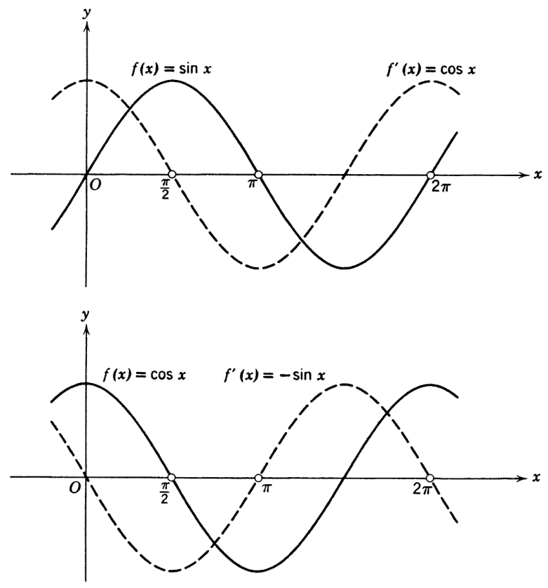
图 2.28 和 的导曲线 最后要指出，高阶导数可用来定义函数。例如可以用一个含有函数本身及其二阶导数的所谓微分方程 来刻画三角函数。对 d ( cos x ) / d x = − sin x , d ( sin x ) / d x = cos x d(\cos x)/dx=-\sin x,\ d(\sin x)/dx=\cos x d ( cos x ) / d x = − sin x , d ( sin x ) / d x = cos x
d 2 d x 2 cos x = − cos x , d 2 d x 2 sin x = − sin x .
\frac{d^2}{dx^2}\cos x=-\cos x,\qquad \frac{d^2}{dx^2}\sin x=-\sin x.
d x 2 d 2 cos x = − cos x , d x 2 d 2 sin x = − sin x . 故若符号 u u u sin x \sin x sin x cos x \cos x cos x u ′ ′ = − u u''=-u u ′′ = − u u = a cos x + b sin x u=a\cos x+b\sin x u = a cos x + b sin x u ′ ′ = − u u''=-u u ′′ = − u a , b a,b a , b u u u u ′ ′ = − u u''=-u u ′′ = − u u u u
g. 导数与差商。莱布尼茨记号
莱布尼茨用符号 d d d Δ \Delta Δ
d y d x = lim Δ x → 0 Δ y Δ x .
\frac{dy}{dx}=\lim_{\Delta x\to0}\frac{\Delta y}{\Delta x}.
d x d y = Δ x → 0 lim Δ x Δ y . 要清楚理解微分学的意义，必须提防一种旧有的谬误，即把导数想成两个实际“无限小”的“量” d y , d x dy,dx d y , d x Δ y / Δ x \Delta y/\Delta x Δ y /Δ x Δ x \Delta x Δ x Δ x , Δ y \Delta x,\Delta y Δ x , Δ y d x , d y dx,dy d x , d y
莱布尼茨的记号本身极富启发性，实际上也格外灵活而好用。原因在于许多计算与形式变换中，符号 d y , d x dy,dx d y , d x d x , d y dx,dy d x , d y d y dy d y d x dx d x
* 对于二阶和更高阶的导数，莱布尼茨也设计了富有启发性的记号。他用下述方式把二阶导数看成“二阶差商”的极限。除 x x x x 1 = x + h , x 2 = x + 2 h x_1=x+h,\ x_2=x+2h x 1 = x + h , x 2 = x + 2 h
1 h ( y 2 − y 1 h − y 1 − y h ) = 1 h 2 ( y 2 − 2 y 1 + y ) ,
\frac1h\left(\frac{y_2-y_1}h-\frac{y_1-y}h\right)=\frac1{h^2}(y_2-2y_1+y),
h 1 ( h y 2 − y 1 − h y 1 − y ) = h 2 1 ( y 2 − 2 y 1 + y ) , 其中 y = f ( x ) , y 1 = f ( x 1 ) , y 2 = f ( x 2 ) y=f(x),\ y_1=f(x_1),\ y_2=f(x_2) y = f ( x ) , y 1 = f ( x 1 ) , y 2 = f ( x 2 ) h = Δ x , y 2 − y 1 = Δ y 1 , y 1 − y = Δ y h=\Delta x,\ y_2-y_1=\Delta y_1,\ y_1-y=\Delta y h = Δ x , y 2 − y 1 = Δ y 1 , y 1 − y = Δ y y y y y y y
y 2 − 2 y 1 + y = Δ y 1 − Δ y = Δ ( Δ y ) = Δ 2 y .
y_2-2y_1+y=\Delta y_1-\Delta y=\Delta(\Delta y)=\Delta^2 y.
y 2 − 2 y 1 + y = Δ y 1 − Δ y = Δ ( Δ y ) = Δ 2 y . 在这种记号下，二阶差商写为 Δ 2 y / ( Δ x ) 2 \Delta^2y/(\Delta x)^2 Δ 2 y / ( Δ x ) 2 Δ x \Delta x Δ x 2 2 2
f ′ ′ ( x ) = lim x 1 → x Δ 2 f ( Δ x ) 2 .
f''(x)=\lim_{x_1\to x}\frac{\Delta^2 f}{(\Delta x)^2}.
f ′′ ( x ) = x 1 → x lim ( Δ x ) 2 Δ 2 f . 受这一差商记号的启发，² 莱布尼茨引入下列二阶和高阶导数记号，我们也将看到它们经得起实际使用的考验：¹
y ′ ′ = f ′ ′ ( x ) = d 2 y d x 2 , y ′ ′ ′ = f ′ ′ ′ ( x ) = d 3 y d x 3 , …
y''=f''(x)=\frac{d^2y}{dx^2},\qquad y'''=f'''(x)=\frac{d^3y}{dx^3},\quad\ldots
y ′′ = f ′′ ( x ) = d x 2 d 2 y , y ′′′ = f ′′′ ( x ) = d x 3 d 3 y , … 原注 1（第 172 页） 这里 Δ Δ = Δ 2 \Delta\Delta=\Delta^2 ΔΔ = Δ 2
原注 2（第 172 页） 必须强调，二阶导数可以表示为二阶差商的极限，这个命题需要证明。前面对二阶导数的定义是用一阶导数的一阶差商取极限。在二阶导数连续的条件下，两种定义等价。目前并不特别需要这个结果，证明留到以后（见第五章附录）。
原注 1（第 173 页） 这是习惯记法。如果加上括号写作 y ′ ′ = d 2 y / ( d x ) 2 , y ′ ′ ′ = d 3 y / ( d x ) 3 y''=d^2y/(dx)^2,\ y'''=d^3y/(dx)^3 y ′′ = d 2 y / ( d x ) 2 , y ′′′ = d 3 y / ( d x ) 3
h. 微分中值定理
差商用到函数在几个不同的 x x x
这个定理从直观上很容易理解。考察函数 f ( x ) f(x) f ( x )
f ( x 1 ) − f ( x 2 ) x 1 − x 2 = Δ f Δ x ,
\frac{f(x_1)-f(x_2)}{x_1-x_2}=\frac{\Delta f}{\Delta x},
x 1 − x 2 f ( x 1 ) − f ( x 2 ) = Δ x Δ f , 先设导数在整个闭区间 x 1 ≤ x ≤ x 2 x_1\le x\le x_2 x 1 ≤ x ≤ x 2 α \alpha α x 1 x_1 x 1 x 2 x_2 x 2 x = ξ x=\xi x = ξ ξ \xi ξ
f ( x 1 ) − f ( x 2 ) x 1 − x 2 = f ′ ( ξ ) .
\frac{f(x_1)-f(x_2)}{x_1-x_2}=f'(\xi).
x 1 − x 2 f ( x 1 ) − f ( x 2 ) = f ′ ( ξ ) . 这个命题称为微分中值定理 。² 注意数 ξ \xi ξ ξ = x 1 + θ ( x 2 − x 1 ) \xi=x_1+\theta(x_2-x_1) ξ = x 1 + θ ( x 2 − x 1 ) θ \theta θ 0 0 0 1 1 1 θ \theta θ ξ \xi ξ
原注 2（第 173 页） 称作“微分的中间值定理”也许更贴切。
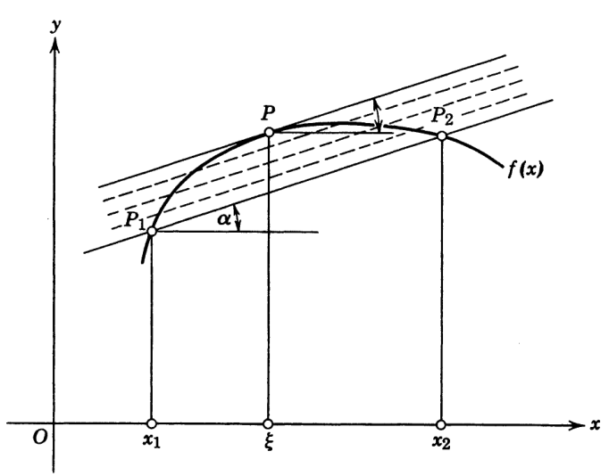
图 2.29 例如，设 x x x y = f ( x ) y=f(x) y = f ( x ) f ′ ( x ) f'(x) f ′ ( x ) x x x Δ x = 2 \Delta x=2 Δ x = 2 Δ f = 120 \Delta f=120 Δ f = 120 ξ \xi ξ 60 60 60 50 50 50 60 60 60
中值定理的精确表述如下。若 f ( x ) f(x) f ( x ) x 1 ≤ x ≤ x 2 x_1\le x\le x_2 x 1 ≤ x ≤ x 2 x 1 < x < x 2 x_1<x<x_2 x 1 < x < x 2 θ \theta θ 0 < θ < 1 0<\theta<1 0 < θ < 1
f ( x 2 ) − f ( x 1 ) x 2 − x 1 = f ′ [ x 1 + θ ( x 2 − x 1 ) ] .
\frac{f(x_2)-f(x_1)}{x_2-x_1}=f'[x_1+\theta(x_2-x_1)].
x 2 − x 1 f ( x 2 ) − f ( x 1 ) = f ′ [ x 1 + θ ( x 2 − x 1 )] . 若把 x 1 x_1 x 1 x x x x 2 x_2 x 2 x + h x+h x + h
f ( x + h ) − f ( x ) h = f ′ ( ξ ) = f ′ ( x + θ h ) , x < ξ < x + h .
\frac{f(x+h)-f(x)}h=f'(\xi)=f'(x+\theta h),\qquad x<\xi<x+h.
h f ( x + h ) − f ( x ) = f ′ ( ξ ) = f ′ ( x + θ h ) , x < ξ < x + h . 虽然必须要求 f ( x ) f(x) f ( x ) f ( x ) = ∣ x ∣ f(x)=|x| f ( x ) = ∣ x ∣
i. 定理的证明
通常从一个特殊情形出发证明中值定理。我们先建立这一特殊情形。
罗尔定理。 若函数 ϕ ( x ) \phi(x) ϕ ( x ) x 1 ≤ x ≤ x 2 x_1\le x\le x_2 x 1 ≤ x ≤ x 2 x 1 < x < x 2 x_1<x<x_2 x 1 < x < x 2 ϕ ( x 1 ) = 0 , ϕ ( x 2 ) = 0 \phi(x_1)=0,\ \phi(x_2)=0 ϕ ( x 1 ) = 0 , ϕ ( x 2 ) = 0 ξ \xi ξ ϕ ′ ( ξ ) = 0 \phi'(\xi)=0 ϕ ′ ( ξ ) = 0 x x x
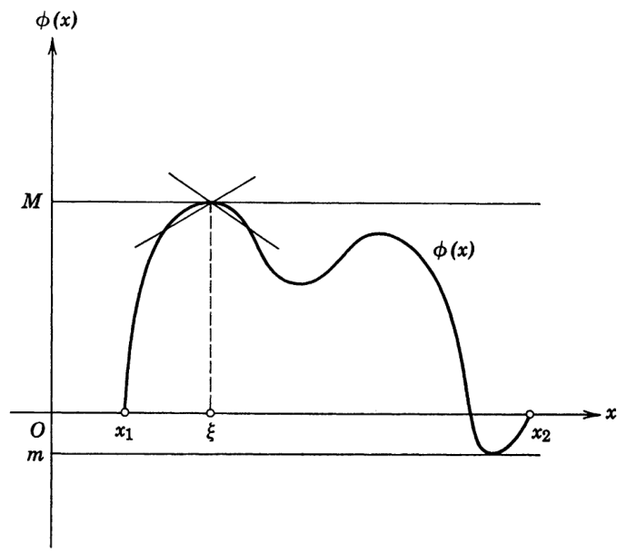
图 2.30 事实上，因 ϕ ( x ) \phi(x) ϕ ( x ) [ x 1 , x 2 ] [x_1,x_2] [ x 1 , x 2 ] M M M m m m ϕ \phi ϕ m ≤ 0 ≤ M m\le0\le M m ≤ 0 ≤ M m = M = 0 m=M=0 m = M = 0 ϕ ( x ) \phi(x) ϕ ( x ) ξ \xi ξ ϕ ′ ( ξ ) = 0 \phi'(\xi)=0 ϕ ′ ( ξ ) = 0 m , M m,M m , M M M M [ x 1 , x 2 ] [x_1,x_2] [ x 1 , x 2 ] ξ \xi ξ ϕ ( ξ ) = M \phi(\xi)=M ϕ ( ξ ) = M ϕ \phi ϕ ξ \xi ξ x ∈ [ x 1 , x 2 ] x\in[x_1,x_2] x ∈ [ x 1 , x 2 ] ϕ ( x ) ≤ ϕ ( ξ ) = M \phi(x)\le\phi(\xi)=M ϕ ( x ) ≤ ϕ ( ξ ) = M h h h ϕ ( ξ + h ) − ϕ ( ξ ) ≤ 0 \phi(\xi+h)-\phi(\xi)\le0 ϕ ( ξ + h ) − ϕ ( ξ ) ≤ 0
ϕ ( ξ + h ) − ϕ ( ξ ) h
\frac{\phi(\xi+h)-\phi(\xi)}h
h ϕ ( ξ + h ) − ϕ ( ξ ) 在 h > 0 h>0 h > 0 h < 0 h<0 h < 0 h h h ϕ ′ ( ξ ) ≤ 0 \phi'(\xi)\le0 ϕ ′ ( ξ ) ≤ 0 h h h ϕ ′ ( ξ ) ≥ 0 \phi'(\xi)\ge0 ϕ ′ ( ξ ) ≥ 0 ϕ ′ ( ξ ) = 0 \phi'(\xi)=0 ϕ ′ ( ξ ) = 0 M ≠ 0 M\ne0 M = 0 m ≠ 0 m\ne0 m = 0
为证明中值定理，把罗尔定理用于下述函数。它表示图像上的点 ( x , f ( x ) ) (x,f(x)) ( x , f ( x ))
ϕ ( x ) = f ( x ) − f ( x 1 ) − f ( x 2 ) − f ( x 1 ) x 2 − x 1 ( x − x 1 ) .
\phi(x)=f(x)-f(x_1)-\frac{f(x_2)-f(x_1)}{x_2-x_1}(x-x_1).
ϕ ( x ) = f ( x ) − f ( x 1 ) − x 2 − x 1 f ( x 2 ) − f ( x 1 ) ( x − x 1 ) . 此函数显然满足 ϕ ( x 1 ) = ϕ ( x 2 ) = 0 \phi(x_1)=\phi(x_2)=0 ϕ ( x 1 ) = ϕ ( x 2 ) = 0 ϕ ( x ) = f ( x ) + a x + b \phi(x)=f(x)+ax+b ϕ ( x ) = f ( x ) + a x + b a = − [ f ( x 2 ) − f ( x 1 ) ] / ( x 2 − x 1 ) a=-[f(x_2)-f(x_1)]/(x_2-x_1) a = − [ f ( x 2 ) − f ( x 1 )] / ( x 2 − x 1 ) b b b ϕ ′ ( x ) = f ′ ( x ) + a \phi'(x)=f'(x)+a ϕ ′ ( x ) = f ′ ( x ) + a ξ \xi ξ 0 = ϕ ′ ( ξ ) = f ′ ( ξ ) + a 0=\phi'(\xi)=f'(\xi)+a 0 = ϕ ′ ( ξ ) = f ′ ( ξ ) + a
f ′ ( ξ ) = − a = f ( x 2 ) − f ( x 1 ) x 2 − x 1 ,
f'(\xi)=-a=\frac{f(x_2)-f(x_1)}{x_2-x_1},
f ′ ( ξ ) = − a = x 2 − x 1 f ( x 2 ) − f ( x 1 ) , 这就证明了中值定理。
原注 1（第 176 页） 这个函数也与曲线上点 ( x , f ( x ) ) (x,f(x)) ( x , f ( x )) ( y − m x − b ) / 1 + m 2 (y-mx-b)/\sqrt{1+m^2} ( y − m x − b ) / 1 + m 2 ( x , y ) (x,y) ( x , y ) y − m x − b = 0 y-mx-b=0 y − m x − b = 0
定理的意义
函数的导数是把一个区间的两端点相互移近时差商的极限。中值定理在可微函数的差商与导数之间建立了不必缩短区间的联系：每一个差商，都等于某一适当中间点 ξ \xi ξ
例子。 同积分中值定理一样，这里的定理除了说 ξ \xi ξ ξ \xi ξ y = f ( x ) = x 2 y=f(x)=x^2 y = f ( x ) = x 2 f ′ ( x ) = 2 x f'(x)=2x f ′ ( x ) = 2 x
f ( x 2 ) − f ( x 1 ) x 2 − x 1 = x 1 + x 2 = f ′ ( ξ ) .
\frac{f(x_2)-f(x_1)}{x_2-x_1}=x_1+x_2=f'(\xi).
x 2 − x 1 f ( x 2 ) − f ( x 1 ) = x 1 + x 2 = f ′ ( ξ ) . 这里 ξ = ( x 1 + x 2 ) / 2 \xi=(x_1+x_2)/2 ξ = ( x 1 + x 2 ) /2 [ x 1 , x 2 ] [x_1,x_2] [ x 1 , x 2 ] ξ \xi ξ x 1 x_1 x 1 x 2 x_2 x 2 f ( x ) = x 3 f(x)=x^3 f ( x ) = x 3 [ f ( 1 ) − f ( 0 ) ] / ( 1 − 0 ) = 1 = f ′ ( ξ ) = 3 ξ 2 [f(1)-f(0)]/(1-0)=1=f'(\xi)=3\xi^2 [ f ( 1 ) − f ( 0 )] / ( 1 − 0 ) = 1 = f ′ ( ξ ) = 3 ξ 2 ξ = 1 / 3 \xi=1/\sqrt3 ξ = 1/ 3
单调函数。 在微分中值定理的许多应用中，先证明一个：若 f ( x ) f(x) f ( x ) f f f f f f [ a , b ] [a,b] [ a , b ] ( a , b ) (a,b) ( a , b ) f ′ ( x ) > 0 f'(x)>0 f ′ ( x ) > 0 ( a , b ) (a,b) ( a , b ) f ( x ) f(x) f ( x ) f ′ ( x ) < 0 f'(x)<0 f ′ ( x ) < 0 f ( x ) f(x) f ( x ) x 1 , x 2 x_1,x_2 x 1 , x 2 a , b a,b a , b ξ \xi ξ f ( x 2 ) − f ( x 1 ) = f ′ ( ξ ) ( x 2 − x 1 ) f(x_2)-f(x_1)=f'(\xi)(x_2-x_1) f ( x 2 ) − f ( x 1 ) = f ′ ( ξ ) ( x 2 − x 1 ) ( a , b ) (a,b) ( a , b ) f ′ ( x ) > 0 f'(x)>0 f ′ ( x ) > 0 f ′ ( ξ ) > 0 f'(\xi)>0 f ′ ( ξ ) > 0 x 2 > x 1 x_2>x_1 x 2 > x 1 f ( x 2 ) − f ( x 1 ) f(x_2)-f(x_1) f ( x 2 ) − f ( x 1 ) f f f ( a , b ) (a,b) ( a , b ) f ′ ( x ) < 0 f'(x)<0 f ′ ( x ) < 0 f f f
同理可证，若 f ( x ) f(x) f ( x ) [ a , b ] [a,b] [ a , b ] ( a , b ) (a,b) ( a , b ) ( a , b ) (a,b) ( a , b ) f ′ ( x ) = 0 f'(x)=0 f ′ ( x ) = 0 f ( x ) f(x) f ( x ) f ( x 2 ) − f ( x 1 ) = f ′ ( ξ ) ( x 2 − x 1 ) = 0 f(x_2)-f(x_1)=f'(\xi)(x_2-x_1)=0 f ( x 2 ) − f ( x 1 ) = f ′ ( ξ ) ( x 2 − x 1 ) = 0 x x x x x x
可微函数的利普希茨连续性。 前面说过，有导数的函数 f ( x ) f(x) f ( x ) f ( x ) f(x) f ( x ) [ a , b ] [a,b] [ a , b ] f ′ ( x ) f'(x) f ′ ( x ) f ′ ( x ) f'(x) f ′ ( x ) f ′ ( x ) f'(x) f ′ ( x ) [ a , b ] [a,b] [ a , b ] M M M ∣ f ′ ( x ) ∣ ≤ M |f'(x)|\le M ∣ f ′ ( x ) ∣ ≤ M ( a , b ) (a,b) ( a , b ) x 1 , x 2 x_1,x_2 x 1 , x 2
∣ f ( x 2 ) − f ( x 1 ) ∣ = ∣ f ′ ( ξ ) ( x 2 − x 1 ) ∣ ≤ M ∣ x 2 − x 1 ∣ .
|f(x_2)-f(x_1)|=|f'(\xi)(x_2-x_1)|\le M|x_2-x_1|.
∣ f ( x 2 ) − f ( x 1 ) ∣ = ∣ f ′ ( ξ ) ( x 2 − x 1 ) ∣ ≤ M ∣ x 2 − x 1 ∣. 任给 ϵ > 0 \epsilon>0 ϵ > 0 δ = ϵ / M \delta=\epsilon/M δ = ϵ / M ∣ x 2 − x 1 ∣ ≤ δ |x_2-x_1|\le\delta ∣ x 2 − x 1 ∣ ≤ δ ∣ f ( x 2 ) − f ( x 1 ) ∣ ≤ ϵ |f(x_2)-f(x_1)|\le\epsilon ∣ f ( x 2 ) − f ( x 1 ) ∣ ≤ ϵ [ − a , + a ] [-a,+a] [ − a , + a ] f ( x ) = x 2 f(x)=x^2 f ( x ) = x 2 ∣ f ′ ( x ) ∣ = ∣ 2 x ∣ ≤ 2 a |f'(x)|=|2x|\le2a ∣ f ′ ( x ) ∣ = ∣2 x ∣ ≤ 2 a ∣ x 2 − x 1 ∣ ≤ ϵ / ( 2 a ) |x_2-x_1|\le\epsilon/(2a) ∣ x 2 − x 1 ∣ ≤ ϵ / ( 2 a ) ∣ f ( x 2 ) − f ( x 1 ) ∣ ≤ ϵ |f(x_2)-f(x_1)|\le\epsilon ∣ f ( x 2 ) − f ( x 1 ) ∣ ≤ ϵ
如前所说，若有常数 M M M x 1 , x 2 x_1,x_2 x 1 , x 2 ∣ f ( x 2 ) − f ( x 1 ) ∣ ≤ M ∣ x 2 − x 1 ∣ |f(x_2)-f(x_1)|\le M|x_2-x_1| ∣ f ( x 2 ) − f ( x 1 ) ∣ ≤ M ∣ x 2 − x 1 ∣ f ( x ) f(x) f ( x ) [ f ( x 2 ) − f ( x 1 ) ] / ( x 2 − x 1 ) [f(x_2)-f(x_1)]/(x_2-x_1) [ f ( x 2 ) − f ( x 1 )] / ( x 2 − x 1 ) M M M f ′ f' f ′ f f f f ( x ) = ∣ x ∣ f(x)=|x| f ( x ) = ∣ x ∣ ∣ f ( x 2 ) − f ( x 1 ) ∣ ≤ ∣ x 2 − x 1 ∣ |f(x_2)-f(x_1)|\le|x_2-x_1| ∣ f ( x 2 ) − f ( x 1 ) ∣ ≤ ∣ x 2 − x 1 ∣
另一方面，并非每个连续函数都利普希茨连续。函数 f ( x ) = x 1 / 3 f(x)=x^{1/3} f ( x ) = x 1/3 x x x [ f ( x ) − f ( 0 ) ] / ( x − 0 ) = x − 2 / 3 [f(x)-f(0)]/(x-0)=x^{-2/3} [ f ( x ) − f ( 0 )] / ( x − 0 ) = x − 2/3 f f f x = 0 x=0 x = 0 f ′ ( x ) = 1 / ( 3 x 2 / 3 ) f'(x)=1/(3x^{2/3}) f ′ ( x ) = 1/ ( 3 x 2/3 ) x x x
j. 用线性函数逼近函数。微分的定义
定义。 函数 y = f ( x ) y=f(x) y = f ( x )
f ′ ( x ) = lim h → 0 f ( x + h ) − f ( x ) h = lim Δ x → 0 Δ y Δ x ,
f'(x)=\lim_{h\to0}\frac{f(x+h)-f(x)}h=\lim_{\Delta x\to0}\frac{\Delta y}{\Delta x},
f ′ ( x ) = h → 0 lim h f ( x + h ) − f ( x ) = Δ x → 0 lim Δ x Δ y , 其中 Δ x = h \Delta x=h Δ x = h x x x h h h
ϵ = ϵ ( h ) = f ( x + h ) − f ( x ) h − f ′ ( x ) = Δ y Δ x − f ′ ( x ) ,
\epsilon=\epsilon(h)=\frac{f(x+h)-f(x)}h-f'(x)=\frac{\Delta y}{\Delta x}-f'(x),
ϵ = ϵ ( h ) = h f ( x + h ) − f ( x ) − f ′ ( x ) = Δ x Δ y − f ′ ( x ) , 那么，f ′ ( x ) f'(x) f ′ ( x ) f f f x x x lim h → 0 ϵ ( h ) = 0 \lim_{h\to0}\epsilon(h)=0 lim h → 0 ϵ ( h ) = 0 Δ y = f ( x + h ) − f ( x ) \Delta y=f(x+h)-f(x) Δ y = f ( x + h ) − f ( x ) x x x Δ x = h \Delta x=h Δ x = h y y y 增量 。由
Δ y = f ′ ( x ) Δ x + ϵ Δ x
\Delta y=f'(x)\Delta x+\epsilon\Delta x
Δ y = f ′ ( x ) Δ x + ϵ Δ x 可见，Δ y \Delta y Δ y f ′ ( x ) Δ x f'(x)\Delta x f ′ ( x ) Δ x Δ x \Delta x Δ x ϵ Δ x \epsilon\Delta x ϵ Δ x Δ x \Delta x Δ x Δ x \Delta x Δ x Δ y \Delta y Δ y y y y 微分 d y dy d y
d y = d f ( x ) = f ′ ( x ) Δ x .
dy=df(x)=f'(x)\Delta x.
d y = df ( x ) = f ′ ( x ) Δ x . 对于任一可微函数 f f f x x x h = Δ x h=\Delta x h = Δ x y = x 2 y=x^2 y = x 2 d y = d ( x 2 ) = 2 x Δ x = 2 x h dy=d(x^2)=2x\Delta x=2xh d y = d ( x 2 ) = 2 x Δ x = 2 x h y = x y=x y = x 1 1 1 d x = Δ x dx=\Delta x d x = Δ x x x x d x dx d x Δ x \Delta x Δ x y = f ( x ) y=f(x) y = f ( x ) d y = d f ( x ) = f ′ ( x ) d x dy=df(x)=f'(x)\,dx d y = df ( x ) = f ′ ( x ) d x
因变量的增量 Δ y = f ′ ( x ) Δ x + ϵ Δ x = d y + ϵ Δ x \Delta y=f'(x)\Delta x+\epsilon\Delta x=dy+\epsilon\Delta x Δ y = f ′ ( x ) Δ x + ϵ Δ x = d y + ϵ Δ x d y dy d y ϵ Δ x \epsilon\Delta x ϵ Δ x y = x 2 y=x^2 y = x 2 d y = 2 x Δ x dy=2x\Delta x d y = 2 x Δ x
Δ y = ( x + Δ x ) 2 − x 2 = 2 x Δ x + ( Δ x ) 2 = d y + ϵ Δ x ,
\Delta y=(x+\Delta x)^2-x^2=2x\Delta x+(\Delta x)^2=dy+\epsilon\Delta x,
Δ y = ( x + Δ x ) 2 − x 2 = 2 x Δ x + ( Δ x ) 2 = d y + ϵ Δ x , 其中 ϵ = Δ x \epsilon=\Delta x ϵ = Δ x
先前用记号 d y / d x dy/dx d y / d x Δ x \Delta x Δ x Δ y / Δ x \Delta y/\Delta x Δ y /Δ x d y , d x dy,dx d y , d x d y / d x dy/dx d y / d x d y dy d y d x dx d x d y , d x dy,dx d y , d x h = Δ x h=\Delta x h = Δ x Δ x \Delta x Δ x d y / d x dy/dx d y / d x f ′ ( x ) f'(x) f ′ ( x ) d y = f ′ ( x ) d x dy=f'(x)\,dx d y = f ′ ( x ) d x
原注 1（第 180 页） 类似地，可定义高阶微分 d 2 y = f ′ ′ ( x ) h 2 = f ′ ′ ( x ) ( d x ) 2 , d 3 y = f ′ ′ ′ ( x ) ( d x ) 3 d^2y=f''(x)h^2=f''(x)(dx)^2,\ d^3y=f'''(x)(dx)^3 d 2 y = f ′′ ( x ) h 2 = f ′′ ( x ) ( d x ) 2 , d 3 y = f ′′′ ( x ) ( d x ) 3
把 f f f f ( x + h ) = f ( x ) + h f ′ ( x ) + ϵ h f(x+h)=f(x)+hf'(x)+\epsilon h f ( x + h ) = f ( x ) + h f ′ ( x ) + ϵ h f ( x + h ) f(x+h) f ( x + h ) h h h f ( x ) + h f ′ ( x ) f(x)+hf'(x) f ( x ) + h f ′ ( x ) ϵ h \epsilon h ϵ h h h h h h h f ( x ) + h f ′ ( x ) f(x)+hf'(x) f ( x ) + h f ′ ( x ) f ( x + h ) f(x+h) f ( x + h ) x x x
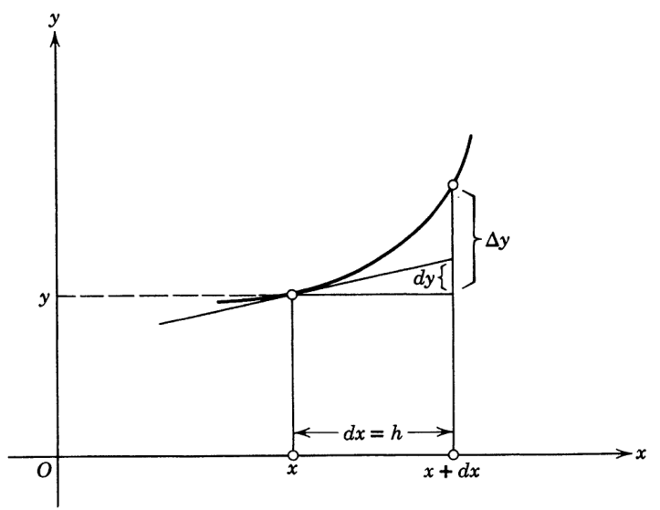
图 2.31 增量 与微分
译者注 在图上，向右走同样长的 Δ x \Delta x Δ x Δ y \Delta y Δ y d y dy d y
线性近似
“误差”有多大，即函数与代表切线的线性函数相差多少，用微分中值定理可以给出更精确的估计。对 x x x x + h x+h x + h ξ \xi ξ f ( x + h ) − f ( x ) = h f ′ ( ξ ) f(x+h)-f(x)=hf'(\xi) f ( x + h ) − f ( x ) = h f ′ ( ξ )
ϵ = f ( x + h ) − f ( x ) h − f ′ ( x ) = f ′ ( ξ ) − f ′ ( x ) .
\epsilon=\frac{f(x+h)-f(x)}h-f'(x)=f'(\xi)-f'(x).
ϵ = h f ( x + h ) − f ( x ) − f ′ ( x ) = f ′ ( ξ ) − f ′ ( x ) . 若像应用中通常的情形那样，f ′ ( x ) f'(x) f ′ ( x ) f ′ ′ ( x ) f''(x) f ′′ ( x ) f ′ ( ξ ) − f ′ ( x ) = ( ξ − x ) f ′ ′ ( η ) f'(\xi)-f'(x)=(\xi-x)f''(\eta) f ′ ( ξ ) − f ′ ( x ) = ( ξ − x ) f ′′ ( η ) η \eta η x x x ξ \xi ξ x x x x + h x+h x + h
∣ ϵ ∣ = ∣ ( ξ − x ) f ′ ′ ( η ) ∣ = ∣ ξ − x ∣ ∣ f ′ ′ ( η ) ∣ ≤ M ∣ h ∣ ,
|\epsilon|=|(\xi-x)f''(\eta)|=|\xi-x|\,|f''(\eta)|\le M|h|,
∣ ϵ ∣ = ∣ ( ξ − x ) f ′′ ( η ) ∣ = ∣ ξ − x ∣ ∣ f ′′ ( η ) ∣ ≤ M ∣ h ∣ , 其中 M M M [ x , x + h ] [x,x+h] [ x , x + h ] ∣ f ′ ′ ∣ |f''| ∣ f ′′ ∣ f ( x + h ) f(x+h) f ( x + h ) f ( x ) + h f ′ ( x ) f(x)+hf'(x) f ( x ) + h f ′ ( x ) ∣ ϵ h ∣ |\epsilon h| ∣ ϵ h ∣ M h 2 Mh^2 M h 2 h h h f ′ ( x ) f'(x) f ′ ( x ) M h 2 Mh^2 M h 2 f ′ ( x ) h f'(x)h f ′ ( x ) h ∣ ϵ h ∣ ≤ 1 2 M h 2 |\epsilon h|\le\tfrac12 Mh^2 ∣ ϵ h ∣ ≤ 2 1 M h 2
插值
* 若函数 f ( x ) f(x) f ( x ) x x x 线性插值 。这也相当于在一个区间中用线性函数代替 f f f f f f f f f a , b a,b a , b
ϕ ( x ) = f ( a ) + ( x − a ) f ( b ) − f ( a ) b − a
\phi(x)=f(a)+(x-a)\frac{f(b)-f(a)}{b-a}
ϕ ( x ) = f ( a ) + ( x − a ) b − a f ( b ) − f ( a ) 代替各中间点 x x x f ( x ) f(x) f ( x ) x x x x = a , x = b x=a,\ x=b x = a , x = b
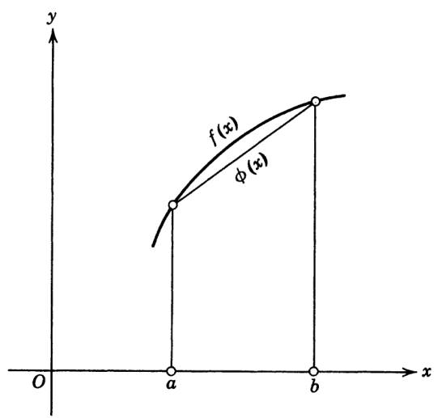
图 2.32 线性插值 同样可用中值定理估计这种近似的误差。我们有
f ( x ) − ϕ ( x ) = ( x − a ) [ f ( x ) − f ( a ) x − a − f ( b ) − f ( a ) b − a ] = ( x − a ) [ f ′ ( ξ 1 ) − f ′ ( ξ 2 ) ] .
f(x)-\phi(x)=(x-a)\left[\frac{f(x)-f(a)}{x-a}-\frac{f(b)-f(a)}{b-a}\right]
=(x-a)[f'(\xi_1)-f'(\xi_2)].
f ( x ) − ϕ ( x ) = ( x − a ) [ x − a f ( x ) − f ( a ) − b − a f ( b ) − f ( a ) ] = ( x − a ) [ f ′ ( ξ 1 ) − f ′ ( ξ 2 )] . ξ 1 \xi_1 ξ 1 a a a x x x ξ 2 \xi_2 ξ 2 a a a b b b f ( x ) − ϕ ( x ) = ( x − a ) f ′ ′ ( η ) ( ξ 1 − ξ 2 ) f(x)-\phi(x)=(x-a)f''(\eta)(\xi_1-\xi_2) f ( x ) − ϕ ( x ) = ( x − a ) f ′′ ( η ) ( ξ 1 − ξ 2 ) η \eta η ξ 1 \xi_1 ξ 1 ξ 2 \xi_2 ξ 2 a a a b b b ∣ f ′ ′ ∣ |f''| ∣ f ′′ ∣ [ a , b ] [a,b] [ a , b ] M M M
∣ f ( x ) − ϕ ( x ) ∣ ≤ ∣ x − a ∣ ∣ ξ 1 − ξ 2 ∣ ∣ f ′ ′ ( η ) ∣ ≤ M ( b − a ) 2 .
|f(x)-\phi(x)|\le |x-a|\,|\xi_1-\xi_2|\,|f''(\eta)|\le M(b-a)^2.
∣ f ( x ) − ϕ ( x ) ∣ ≤ ∣ x − a ∣ ∣ ξ 1 − ξ 2 ∣ ∣ f ′′ ( η ) ∣ ≤ M ( b − a ) 2 . 同前一样，f f f
举一个数值例子。从按弧度编制的三角函数表中取出 sin 0.75 = 0.6816 , sin 0.76 = 0.6889 \sin0.75=0.6816,\ \sin0.76=0.6889 sin 0.75 = 0.6816 , sin 0.76 = 0.6889 0.00005 0.00005 0.00005 0.754 0.754 0.754
sin 0.754 ≈ 0.6816 + 4 10 ( 0.6889 − 0.6816 ) ≈ 0.6845.
\sin0.754\approx0.6816+\tfrac4{10}(0.6889-0.6816)\approx0.6845.
sin 0.754 ≈ 0.6816 + 10 4 ( 0.6889 − 0.6816 ) ≈ 0.6845. 对 f ( x ) = sin x f(x)=\sin x f ( x ) = sin x f ′ ( x ) = cos x f'(x)=\cos x f ′ ( x ) = cos x f ′ ′ ( x ) = − sin x f''(x)=-\sin x f ′′ ( x ) = − sin x ∣ f ′ ′ ( x ) ∣ ≤ 1 |f''(x)|\le1 ∣ f ′′ ( x ) ∣ ≤ 1 sin 0.754 \sin0.754 sin 0.754 1 × ( 0.01 ) 2 = 0.0001 1\times(0.01)^2=0.0001 1 × ( 0.01 ) 2 = 0.0001
也可以把线性插值所得的数，同用 x = 0.75 x=0.75 x = 0.75 f ′ ( 0.75 ) = cos 0.75 = 0.7317 f'(0.75)=\cos0.75=0.7317 f ′ ( 0.75 ) = cos 0.75 = 0.7317
sin 0.754 ≈ f ( 0.75 ) + f ′ ( 0.75 ) ( 0.004 ) = sin 0.75 + 0.004 cos 0.75 ≈ 0.6845.
\sin0.754\approx f(0.75)+f'(0.75)(0.004)=\sin0.75+0.004\cos0.75\approx0.6845.
sin 0.754 ≈ f ( 0.75 ) + f ′ ( 0.75 ) ( 0.004 ) = sin 0.75 + 0.004 cos 0.75 ≈ 0.6845. 顺便一提，sin 0.754 \sin0.754 sin 0.754 0.684560 0.684560 0.684560
k. 关于自然科学应用的几点说明
把数学应用于自然现象时，所处理的量从来不会是精确已知的。一段长度是否恰好等于一米，任何实验都不能判定，因而这个问题没有物理意义。同样，说一根实物杆的长度是有理数或无理数，也没有直接的物理意义。总可以用有理数把它量到任意所需的精度，有意义的问题只是能否用分母比较小的有理数做到这一点。正如“精确数学”严格意义下的有理或无理的问题没有物理意义，应用中所作的极限过程通常也不过是数学上的理想化。
这种理想化具有压倒性的重要实际意义，在于它使分析表达式大为简化，更容易驾驭。例如，瞬时速度只是一个确定时刻的函数，使用它比使用两个不同时刻之间的平均速度简单方便得多。没有这样的理想化，任何对自然的科学研究都势必陷入无可解脱的复杂局面，起步便寸步难行。
我们无意就数学与现实的关系展开哲学讨论。但为更好理解理论，应强调：在应用中，只要差量足够小，能保证近似达到要求，便有理由用差商代替导数，反过来也一样。因此，物理学家、生物学家、工程师以及任何实际运用这些概念的人，在其精度范围内都可以把差商与导数等同起来。自变量的增量 h = Δ x h=\Delta x h = Δ x d y = h f ′ ( x ) dy=hf'(x) d y = h f ′ ( x ) Δ y = f ( x + h ) − f ( x ) \Delta y=f(x+h)-f(x) Δ y = f ( x + h ) − f ( x ) d x = h dx=h d x = h d y = h f ′ ( x ) dy=hf'(x) d y = h f ′ ( x )